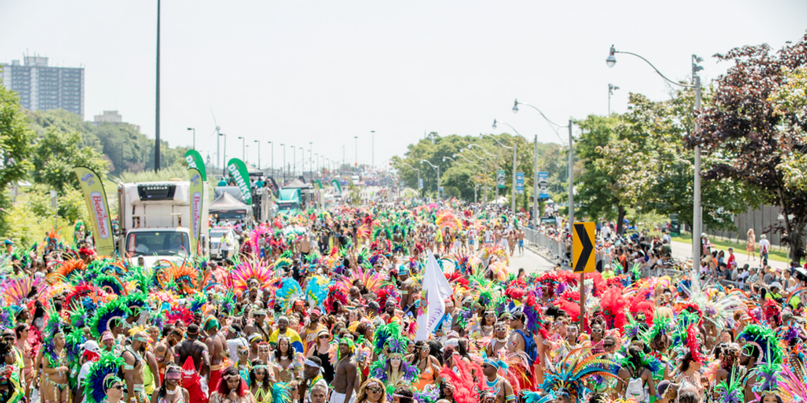
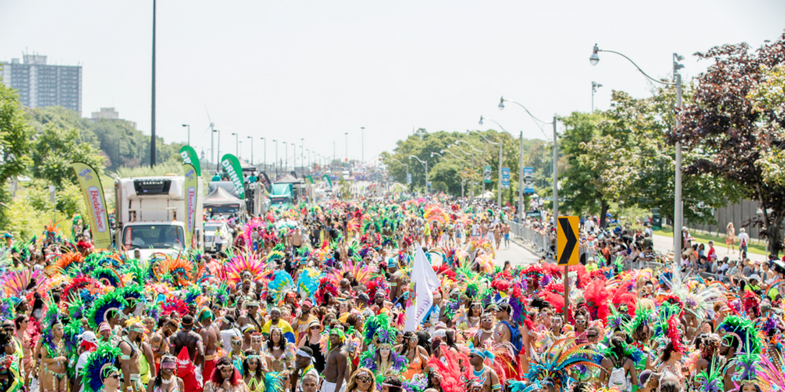

Annual Festivals & Events
Food, music, art, culture – whatever your passion, there’s a festival for it in Toronto.
Food, music, art, culture – whatever your passion, there’s a festival for it in Toronto.
An exciting cultural explosion of Caribbean music, cuisine, revelry and visual and performing arts. Over fifty years it has become a major international event and the largest cultural festival of its kind in North America.
Recognized as one of the premier entertainment events in North America, CMW is a combination of informative conferences, exciting award shows, a cutting-edge trade exhibition, a film festival and a massive new music festival. So whether you’re in the music industry, want to be, or are simply a fan of great music, there will be plenty of events for you to check out – all in downtown Toronto.
There’s Something for Everyone
From Pop to Punk to Hip Hop, Jazz, Indie, Country, Industrial, and many, many more, there will be no shortage of musical genres to choose from at this year’s CMW. With hundreds of musicians and bands representing a multitude of musical genres and sub-genres, CMW promises to deliver the goods – no matter what you’re into. This year, headliners include rhythm & blues singer-songwriter Nick Waterhouse,
Ontario rockers Tokyo Police Club and Born Ruffians, rapper Drake, Parisian synthwave sensation Perturbator, and American alt-rock mainstay The Dandy Warhols. So whether you’re a hip-hop head, a lover of folk, an alt rocker, or you just like a little bit of everything, there’s something for everyone at this year’s festival.
The Toronto Caribbean Carnival, formerly and previously called Caribana (1967-2006), Toronto Caribbean Carnival (Caribana) (2006-2007), Scotiabank Caribana (2007-2011), Scotiabank Toronto Caribbean Carnival (2011-2015), Peeks Toronto Caribbean Carnival (2017-2018) Toronto Caribbean Carnival (2018–present) is a festival of Caribbean culture and traditions held each summer in the city of Toronto, Ontario, Canada. It is a Caribbean Carnival event, that has been billed as North America's largest street festival, frequented by over 1.3 million visitors each year for the festival's final parade and an overall attendance of 2 million.The entire event, which is one of the first Caribbean Carnivals along with those in New York City, Notting Hill and Boston to be held outside of the Caribbean region, brings in over one million U.S. citizens to Toronto and over $400 million into Ontario's economy, annually.
The Taste of the Kingsway is an annual street festival held in Toronto, Ontario. The festival takes place during the first weekend of September, on Bloor Street West between the intersections of Prince Edward Drive and Montgomery Road. Held on the second weekend of September, Taste of the Kingsway is the Kingsway neighbourhood's largest festival of the year. Hosted by the Kingsway BIA, an organization formed in 1979 aiming to promote the Kingsway area, the Taste of the Kingsway has grown from a small celebration of local food in 1998 to a large community event attracting over 200,000 visitors in 2010. Its main attraction The Taste of the Kingsway offers live music, a wide variety of food, amusement rides, street performers, and carnival games. The festival also raises money for charity and hosts the largest dog show in Etobicoke.